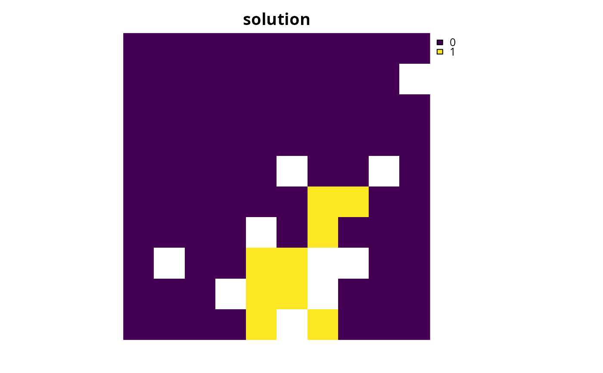
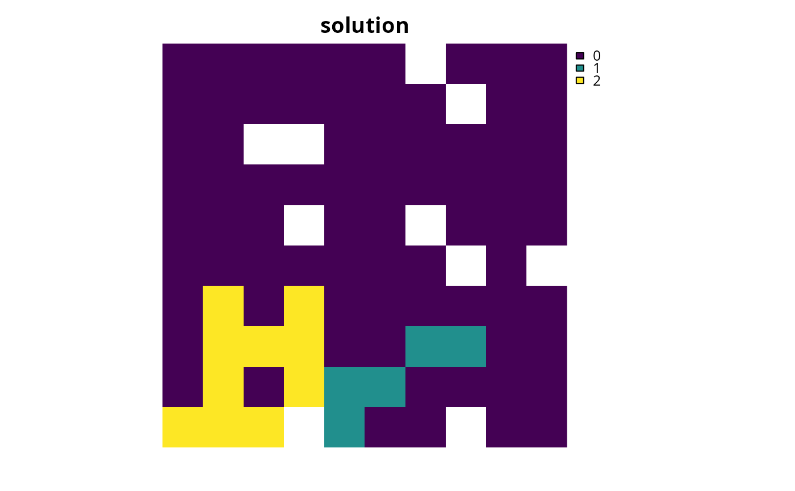
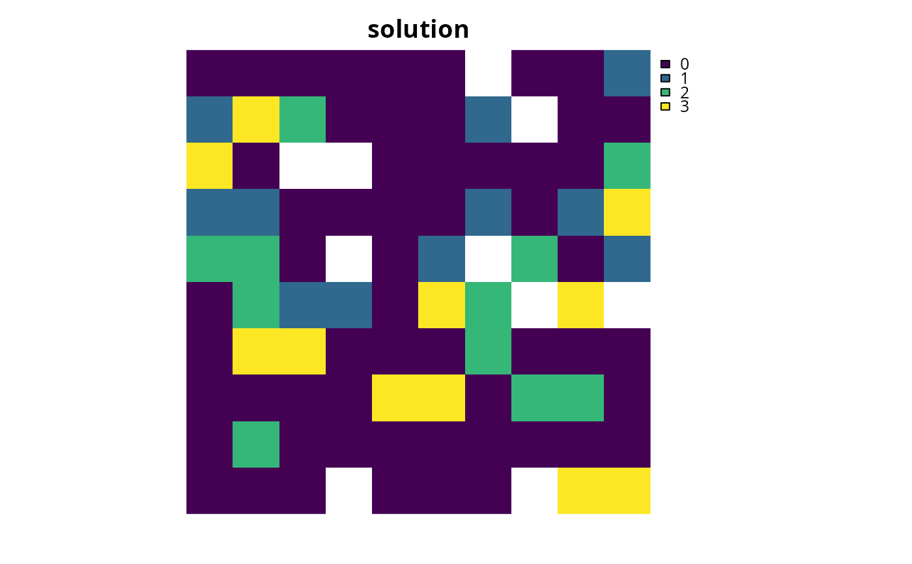

Add minimum shortfall objective
Source:R/add_min_shortfall_objective.R
add_min_shortfall_objective.RdSet the objective of a conservation planning problem to minimize the overall shortfall for as many targets as possible while ensuring that the cost of the solution does not exceed a budget.
Arguments
- x
problem()object.- budget
numericvalue specifying the maximum expenditure of the prioritization. For problems with multiple zones, the argument tobudgetcan be (i) a singlenumericvalue to specify a single budget for the entire solution or (ii) anumericvector to specify a separate budget for each management zone.
Value
An updated problem() object with the objective added to it.
Details
The minimum shortfall objective aims to
find the set of planning units that minimize the overall
(weighted sum) shortfall for the
representation targets---that is, the fraction of each target that
remains unmet---for as many features as possible while staying within a
fixed budget (inspired by Table 1, equation IV, Arponen et al.
2005). Additionally, weights can be used
to favor the representation of certain features over other features (see
add_feature_weights().
Mathematical formulation
This objective can be expressed mathematically for a set of planning units (\(I\) indexed by \(i\)) and a set of features (\(J\) indexed by \(j\)) as:
$$\mathit{Minimize} \space \sum_{j = 1}^{J} w_j \frac{y_j}{t_j} \\ \mathit{subject \space to} \\ \sum_{i = 1}^{I} x_i r_{ij} + y_j \geq t_j \forall j \in J \\ \sum_{i = 1}^{I} x_i c_i \leq B$$
Here, \(x_i\) is the decisions variable (e.g.,
specifying whether planning unit \(i\) has been selected (1) or not
(0)), \(r_{ij}\) is the amount of feature \(j\) in planning
unit \(i\), \(t_j\) is the representation target for feature
\(j\), \(y_j\) denotes the representation shortfall for
the target \(t_j\) for feature \(j\), and \(w_j\) is the
weight for feature \(j\) (defaults to 1 for all features; see
add_feature_weights() to specify weights). Additionally,
\(B\) is the budget allocated for the solution, \(c_i\) is the
cost of planning unit \(i\). Note that \(y_j\) is a continuous
variable bounded between zero and infinity, and denotes the shortfall
for target \(j\).
References
Arponen A, Heikkinen RK, Thomas CD, and Moilanen A (2005) The value of biodiversity in reserve selection: representation, species weighting, and benefit functions. Conservation Biology, 19: 2009--2014.
See also
See objectives for an overview of all functions for adding objectives.
Also, see targets for an overview of all functions for adding targets, and
add_feature_weights() to specify weights for different features.
Other objectives:
add_max_cover_objective(),
add_max_features_objective(),
add_max_phylo_div_objective(),
add_max_phylo_end_objective(),
add_max_utility_objective(),
add_min_largest_shortfall_objective(),
add_min_set_objective()
Examples
# \dontrun{
# load data
sim_pu_raster <- get_sim_pu_raster()
sim_features <- get_sim_features()
sim_zones_pu_raster <- get_sim_zones_pu_raster()
sim_zones_features <- get_sim_zones_features()
# create problem with minimum shortfall objective
p1 <-
problem(sim_pu_raster, sim_features) %>%
add_min_shortfall_objective(1800) %>%
add_relative_targets(0.1) %>%
add_binary_decisions() %>%
add_default_solver(verbose = FALSE)
# solve problem
s1 <- solve(p1)
# plot solution
plot(s1, main = "solution", axes = FALSE)

# create multi-zone problem with minimum shortfall objective,
# with 10% representation targets for each feature, and set
# a budget such that the total maximum expenditure in all zones
# cannot exceed 3000
p2 <-
problem(sim_zones_pu_raster, sim_zones_features) %>%
add_min_shortfall_objective(3000) %>%
add_relative_targets(matrix(0.1, ncol = 3, nrow = 5)) %>%
add_binary_decisions() %>%
add_default_solver(verbose = FALSE)
# solve problem
s2 <- solve(p2)
# plot solution
plot(category_layer(s2), main = "solution", axes = FALSE)

# create multi-zone problem with minimum shortfall objective,
# with 10% representation targets for each feature, and set
# separate budgets for each management zone
p3 <-
problem(sim_zones_pu_raster, sim_zones_features) %>%
add_min_shortfall_objective(c(3000, 3000, 3000)) %>%
add_relative_targets(matrix(0.1, ncol = 3, nrow = 5)) %>%
add_binary_decisions() %>%
add_default_solver(verbose = FALSE)
# solve problem
s3 <- solve(p3)
# plot solution
plot(category_layer(s3), main = "solution", axes = FALSE)

# }